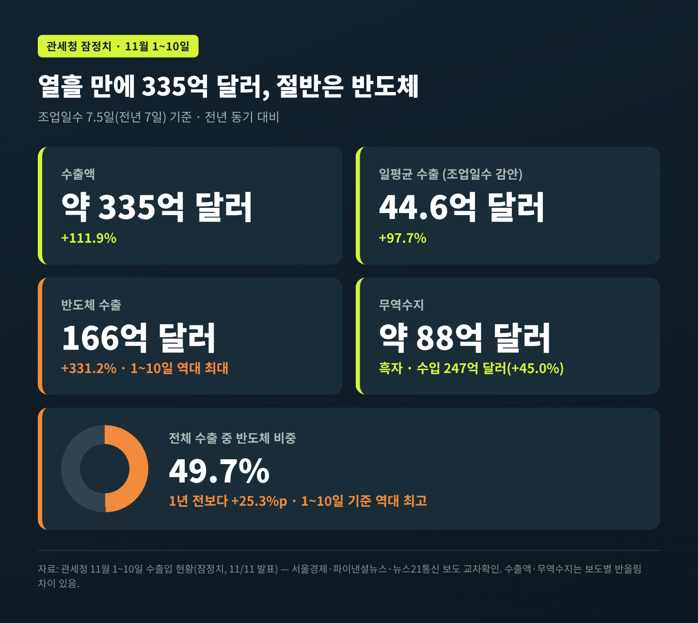
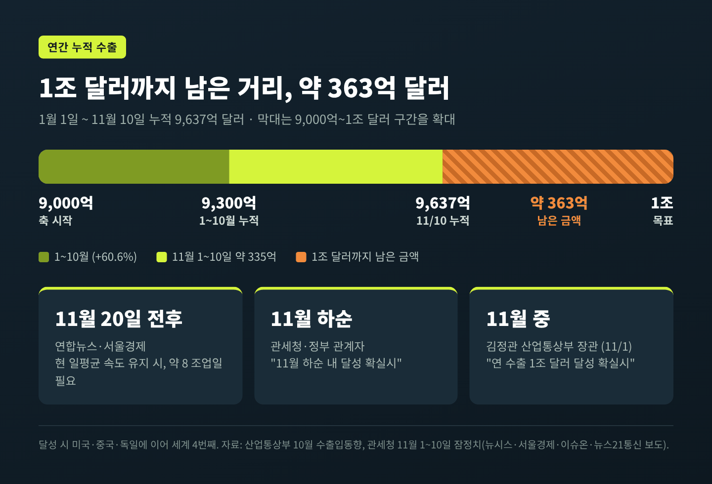
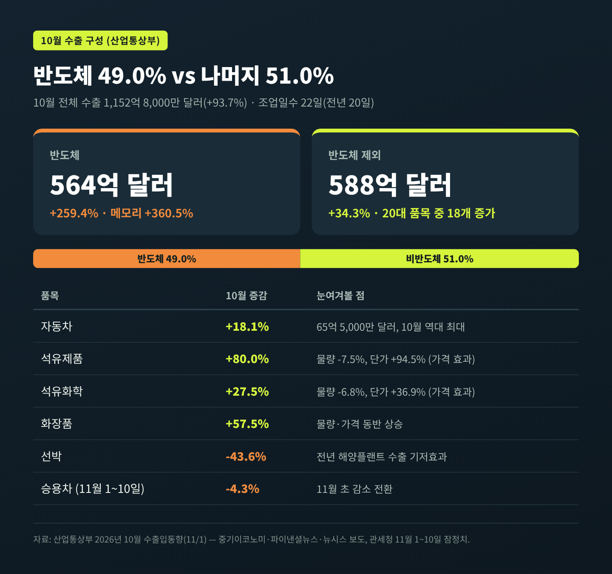
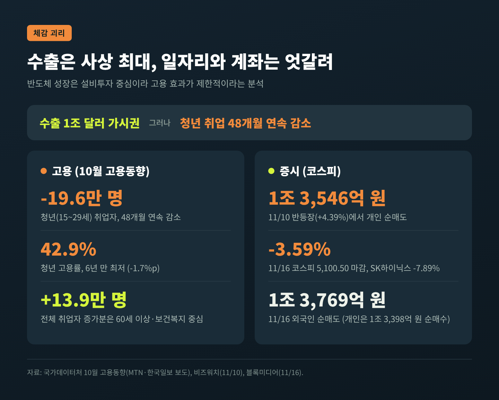
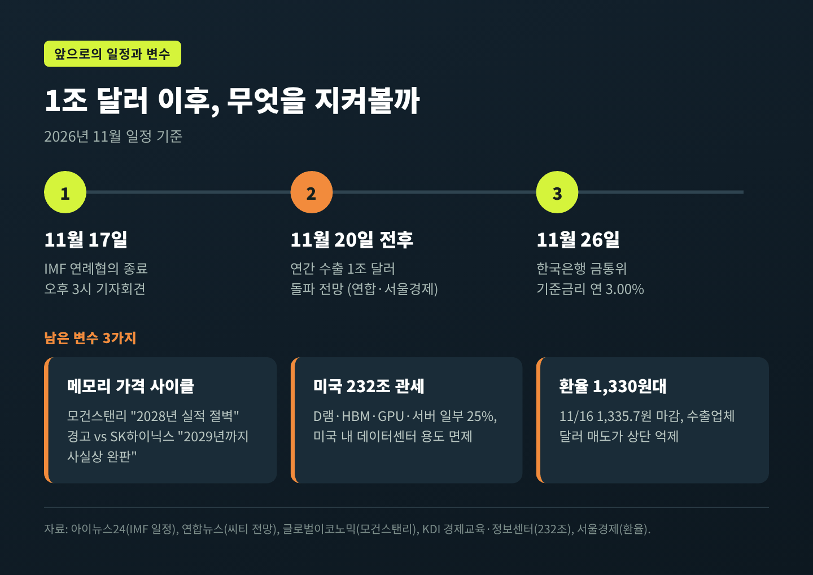

수출 1조 달러 돌파 눈앞, 반도체가 절반 채운 성적표의 명암

이번 글에서는 관세청이 내놓은 11월 1~10일 수출 잠정치를 계기로, 사상 첫 연간 수출 1조 달러가 어디까지 다가왔는지 정리해 보겠습니다. 숫자 자체보다 그 안의 구성, 특히 반도체 쏠림과 체감 경기의 괴리에 초점을 맞췄습니다.
3줄 요약 - 11월 1~10일 수출은 약 335억 달러로 1년 전보다 111.9% 늘었고, 이 가운데 반도체가 166억 달러(비중 49.7%)를 차지했습니다. - 1월 1일부터 11월 10일까지 누적 수출은 9,637억 달러입니다. 1조 달러까지 남은 거리는 약 363억 달러로, 이르면 11월 20일 전후 돌파가 점쳐집니다. - 다만 반도체 비중이 역대 최고 수준이고, 청년 고용과 증시 체감은 이 숫자를 따라가지 못하고 있습니다.
■ 열흘 만에 335억 달러, 무엇이 달랐나
관세청은 11월 11일 이달 1~10일 수출입 잠정치를 발표했습니다. 수출은 약 335억 달러로 전년 같은 기간 대비 111.9% 증가했습니다. 11월 1~10일 기준으로는 역대 최대이고, 월초 열흘 실적으로는 9월(351억 달러)에 이어 두 번째 규모입니다.
증가율은 다소 걸러서 볼 필요가 있습니다. 올해 이 기간 조업일수는 7.5일로 지난해보다 0.5일 많았습니다. 이를 감안한 일평균 수출은 44.6억 달러, 증가율은 97.7%입니다. 그래도 두 배 가까운 증가라는 사실은 달라지지 않습니다.
품목별로는 반도체가 166억 3,200만 달러로 331.2% 뛰었습니다. 컴퓨터 주변기기(+237.7%)와 석유제품(+100.7%)도 크게 늘었습니다. 반면 주력 품목인 승용차는 4.3% 줄었습니다.
국가별로는 중국(+148.0%), 미국(+163.6%), 베트남(+113.3%), 대만(+182.5%)이 모두 급증했고 유럽연합(EU)은 20.0% 증가에 그쳤습니다. 중국·미국·베트남 세 나라가 전체 수출의 57.3%를 차지했습니다. 수입은 247억 달러로 45.0% 늘었고, 무역수지는 약 88억 달러 흑자였습니다.

■ 1조 달러, 언제 넘어서나
1~10월 누적 수출은 약 9,300억 달러였습니다. 사상 처음 9,000억 달러를 넘긴 수치이고, 그때 1조 달러까지 남은 금액은 약 700억 달러였습니다. 11월 들어 열흘 만에 335억 달러가 더해지면서 누적은 9,637억 달러가 됐습니다.
이제 남은 것은 약 363억 달러입니다. 돌파 시점 전망은 발표 주체마다 조금씩 다릅니다.
- 연합뉴스·서울경제: 현재 일평균 속도가 이어지면 11월 20일 전후. 서울경제는 약 8 조업일이 더 필요하다고 계산했습니다.
- 관세청·정부 관계자: "11월 하순 내" 달성이 확실시된다고 봤습니다.
- 김정관 산업통상부 장관(11월 1일): "11월 중 연 수출 1조 달러 달성이 확실시"된다고 밝혔습니다.
어느 쪽이든 11월 안에 넘어설 가능성이 높다는 데에는 이견이 없습니다. 달성하면 한국은 미국·중국·독일에 이어 연간 수출 1조 달러를 기록한 네 번째 나라가 됩니다. 1948년 첫해 수출액이 1,900만 달러였다는 점을 떠올리면 상징성은 분명합니다. 다만 공식 확인은 관세청의 11월 중순·하순 집계를 거쳐야 합니다.

■ 수출의 절반이 반도체라는 것
이번 성적표에서 가장 눈에 띄는 숫자는 49.7%입니다. 11월 1~10일 전체 수출에서 반도체가 차지한 비중입니다. 1년 전보다 25.3%포인트 높아졌고, 월초 열흘 기준으로 역대 최고입니다.
10월 한 달도 비슷했습니다. 전체 수출 1,153억 달러 가운데 반도체가 564억 4,000만 달러(+259.4%)로 49.0%를 차지했습니다. 그중 메모리가 501억 4,000만 달러로 360.5% 늘었습니다. 시스템반도체 증가율(32.6%)과는 차이가 큽니다. 여기에 서버용 SSD가 대부분인 컴퓨터 수출(58억 5,000만 달러)까지 합하면, AI 데이터센터 수요가 수출의 절반 이상을 떠받치는 구조입니다.
머니투데이는 11월 16일 사설에서 1~10월 누적 반도체 비중을 42.7%로 제시했습니다. 그러면서 1조 달러를 성과로 평가하되, 특정 품목 의존이 높아 경기 변동에 취약하다고 경고했습니다.
1년 전 같은 기간 반도체 비중은 24% 남짓이었습니다. 지금은 월초 집계에서 절반에 육박합니다. 한 품목의 가격과 수요가 한 나라 수출 전체의 방향을 정하는 단계에 들어선 셈입니다.
■ 반도체 밖은 정말 부진한가
그렇다고 비반도체 품목이 모두 가라앉은 것은 아닙니다. 산업통상부에 따르면 10월 반도체를 뺀 수출은 588억 4,000만 달러로 34.3% 늘었습니다. 주요 20대 품목 가운데 18개가 증가했습니다.
| 품목(10월) | 금액·증감 | 눈여겨볼 점 |
|---|---|---|
| 자동차 | 65억 5,000만 달러, +18.1% | 10월 역대 최대. 하이브리드 +53.1% |
| 석유제품 | 69억 달러, +80.0% | 물량 -7.5%, 단가 +94.5% |
| 석유화학 | 40억 달러, +27.5% | 물량 -6.8%, 단가 +36.9% |
| 화장품 | +57.5% | 기초화장품 중심 |
| 선박 | -43.6% | 전년 해양플랜트 기저효과 |
| 생활용품 | -13.4% | 패션잡화 감소 |
좋은 신호와 경계할 대목이 섞여 있습니다. 자동차와 화장품은 실제 수요가 늘었습니다. 반면 석유제품·석유화학은 물량이 줄었는데 단가가 올라 금액이 커진 경우입니다. 유가가 내리면 같은 속도로 꺼질 수 있습니다. 10월은 조업일수가 20일에서 22일로 늘어난 달력 효과도 섞여 있습니다. 11월 초에는 승용차가 4.3% 감소로 돌아섰습니다.
김정관 장관도 여전히 많은 중소·중견기업이 자국 우선주의, 공급망 재편, 중동 정세 불안으로 어려움을 겪고 있다고 언급했습니다. 반도체 바깥이 '부진'이라고 단정하긴 어렵지만, 그 개선의 상당 부분이 가격과 일수에 기대고 있다는 점은 짚어둘 만합니다.

■ 숫자는 사상 최대, 체감은 왜 다른가
수출이 기록을 갈아치우는 동안 일자리는 다른 그림을 보였습니다. 국가데이터처의 10월 고용동향에서 청년층(15~29세) 취업자는 1년 전보다 19만 6,000명 줄었습니다. 48개월 연속 감소이고, 청년 고용률은 42.9%로 6년 만에 가장 낮았습니다. 전체 취업자는 13만 9,000명 늘었지만 증가분은 60세 이상과 보건·복지업에 몰렸습니다.
이유에 대한 설명은 대체로 한 방향입니다. 통계 당국자는 대규모 설비투자 중심의 반도체 성장은 고용 효과가 제한적이라고 했습니다. 김유빈 한국노동연구원 선임연구위원은 반도체 공장이 로봇 위주로 돌아가 호황이라고 사람을 더 뽑지 않는다고 짚었습니다. 한국은행은 AI 확산으로 경력직 선호가 강해지며 청년이 맡던 초급 업무 수요가 줄었다고 분석했습니다. 수출 호황의 열매가 아래로 흘러내리는 '낙수효과'가 잘 보이지 않는 이유입니다.
증시 체감도 엇갈립니다. 11월 10일 코스피가 4.39% 반등한 날, 개인은 1조 3,546억 원을 순매도했습니다. 2분기 고점 부근에서 산 투자자들이 반등 때마다 물량을 덜어낸 것으로 풀이됩니다. 오늘(11월 16일)은 반대였습니다. 코스피가 3.59% 떨어진 5,100.50에 마감했고, SK하이닉스는 7.89%, 삼성전자는 4.47% 내렸습니다. 외국인이 1조 3,769억 원을 팔았고, 개인은 1조 3,398억 원을 사들였습니다. 미래에셋증권은 엔비디아 관련 불확실성이 반도체 투자심리를 흔들었다고 설명했습니다.
수출 통계가 최고치를 경신하는 날에도 반도체 주가는 하루 만에 크게 흔들립니다. '수출 1조 달러'와 '내 일자리, 내 계좌' 사이의 거리가 그만큼 멀다는 뜻입니다.

■ 남은 변수: 메모리 사이클, 관세, 환율
메모리 가격 사이클이 첫 번째입니다. 모건스탠리는 11월 9일 보고서에서 2028년 '실적 절벽'을 피할 수 있을지가 관건이라고 봤습니다. 내년 말부터 새 공장 가동으로 공급이 늘어나는 반면, AI 데이터센터 건설 속도는 느려질 수 있다는 논리입니다. 다만 같은 보고서에서 삼성전자와 SK하이닉스의 내년 영업이익 전망은 각각 9%, 13% 올렸습니다. 업계 반론도 만만치 않습니다. SK하이닉스는 2029년까지 D램·HBM 물량이 사실상 완판됐다고 밝혔고, 씨티는 주요 D램 현물가격 상승이 이어지고 있다고 전했습니다. 단기 호황과 중기 공급 과잉 우려가 함께 존재하는 국면입니다.
미국 관세도 지켜볼 대목입니다. 미국은 1월 무역확장법 232조에 따라 D램·HBM·GPU·서버 등 일부 반도체 품목에 25% 관세를 매겼습니다. 미국 내 데이터센터 용도 등은 면제여서 한국무역협회는 영향이 제한적이라고 평가했습니다. 실제로 10월 대미 수출은 249억 달러로 185.8% 늘었습니다. 그러나 대미 의존과 흑자가 커질수록 통상 압박의 빌미가 될 수 있습니다.
환율은 1,330원대에서 움직이고 있습니다. 오늘 원·달러 환율은 1,335.7원으로 마감했습니다. 외국인 주식 매도에도 수출업체의 달러 매도가 환율 상단을 눌렀다는 분석입니다. 수출 호조가 원화를 받치는 구조라면, 반대로 반도체 수출이 꺾일 때 환율이 함께 흔들릴 수 있다는 점도 염두에 둘 필요가 있습니다.
■ 이번 주와 이달 말 일정
내일(11월 17일)은 국제통화기금(IMF) 연례협의가 마무리되는 날입니다. IMF는 부총리 면담 뒤 오후 3시 기자회견을 엽니다. IMF는 10월 세계경제전망에서 올해 한국 성장률을 3.3%로 올렸는데, 지난해 연례협의 때 전망은 1.8%였습니다. 긴축 쪽 통화정책(기준금리 연 3.00%)과 확장 쪽 재정의 엇박자를 어떻게 평가할지가 관심사입니다.
11월 26일에는 한국은행 금융통화위원회가 열립니다. 씨티는 11월과 내년 2월 각각 0.25%포인트 인상을 예상하면서, 반도체 가격 상승세를 근거로 들었습니다. 반도체 수출 호황이 금리 경로에도 영향을 주는 셈입니다.

정리하면 이렇습니다. 연간 수출 1조 달러는 사실상 시간문제이고, 그 자체로 평가받을 만한 기록입니다. 다만 그 절반을 한 품목이 채우고 있고, 기록이 일자리와 가계로 번지지 못하는 모습도 함께 확인됐습니다.
1조 달러라는 숫자는 끝이 아니라 질문의 시작에 가깝습니다 — 이 호황을 반도체 밖으로 얼마나 넓힐 수 있느냐는 질문입니다.
축배를 들 때냐고 물으신다면, 잔은 들되 다음 사이클을 준비하는 손은 놓지 말아야 할 때라고 답하겠습니다.
이 글은 정보 제공 목적이며 투자 권유가 아닙니다.
출처
- 서울경제, 「11월 초 반도체 수출 역대 최대…연간 1조 달러 돌파 '초읽기'」(2026-11-11) - https://m.sedaily.com/article/20112751
- 파이낸셜뉴스(뉴스1), 「1~10일 수출 역대 최대 335억달러 111.9%↑…반도체 비중 49.7%」(2026-11-11) - https://www.fnnews.com/news/202611110917324697
- 이슈온(연합뉴스 인용), 「11월 1~10일 수출 335억달러 111.9%↑…연 수출 1조달러 20일 전후」(2026-11-15) - https://www.issueon.co.kr/news/articleView.html?idxno=14411
- 뉴스21통신, 「韓 수출 '꿈의 1조 달러' 초읽기…11월 10일 누적 9,636억 달러」(2026-11-11) - https://www.news21tongsin.co.kr/news/309892
- 뉴시스, 「누적 수출 사상 첫 9000억弗 돌파…이달 1조弗 달성 확실시」(2026-11-01) - https://newsis.com/view/NISX20261101_0003849625
- 파이낸셜뉴스, 「이달 '수출 1조 달러' 달성 전망…美·中·獨 이어 세계 4번째」(2026-11-01) - https://www.fnnews.com/news/202611011155501676
- 중기이코노미, 「10월 수출 93.7% 증가…반도체 빼도 수출 34% 늘어」(2026-11-02) - https://www.junggi.co.kr/news/articleView.html?idxno=38326
- 머니투데이 사설, 「수출 1조달러 금자탑, 반도체 편중 그늘도」(2026-11-16) - https://www.mt.co.kr/opinion/2026/11/16/2026111516323336487
- MTN, 「10월 취업자 13.9만명 늘었는데, 청년은 19.6만명 감소」(2026-11-11) - https://news.mtn.co.kr/article/2026111108164949518
- 한국일보, 「청년 취업 48개월 연속 감소」(2026-11-11) - https://www.hankookilbo.com/news/article/A2026111110270004978
- 뉴스핌, 「반도체 호황에 경제지표 호조인데...청년 고용은 '악화'」(2026-10-28) - https://www.newspim.com/news/view/20261028001249
- 비즈워치, 「코스피·코스닥 나란히 4%대 강세…개인은 반등 틈타 '팔자'」(2026-11-10) - https://news.bizwatch.co.kr/article/market/2026/11/10/0040
- 블록미디어, 「코스피, 반도체주 급락에 3%대 하락…5100선 '턱걸이'」(2026-11-16) - https://www.blockmedia.co.kr/archives/1166321
- 서울경제, 「증시 급락에도 원화는 '꿋꿋'…환율 1원 내린 1335.7원 마감」(2026-11-16) - https://m.sedaily.com/article/20114942
- 글로벌이코노믹, 「메모리 고점론 또 고개…美 투자은행發 '실적 절벽' 우려」(2026-11-11) - https://www.g-enews.com/article/Industry/2026/11/202611111530263800139bf6e4b2_1
- KDI 경제교육·정보센터, 「미국, 반도체·핵심광물 232조 조치 도입 및 영향」(2026-01-20) - https://eiec.kdi.re.kr/policy/domesticView.do?ac=0000202125
- 아이뉴스24, 「IMF, 1.8%→3.3%로 바뀐 한국 경제 점검」(2026-11-02) - https://www.inews24.com/view/2021691
- 한민족센터(연합뉴스), 「반도체 가격 상승세 지속…내년 2월까지 0.25%p씩 두 차례 인상」(2026-11-06) - https://www.koreancenter.or.kr/news/articleView.html?idxno=1435952